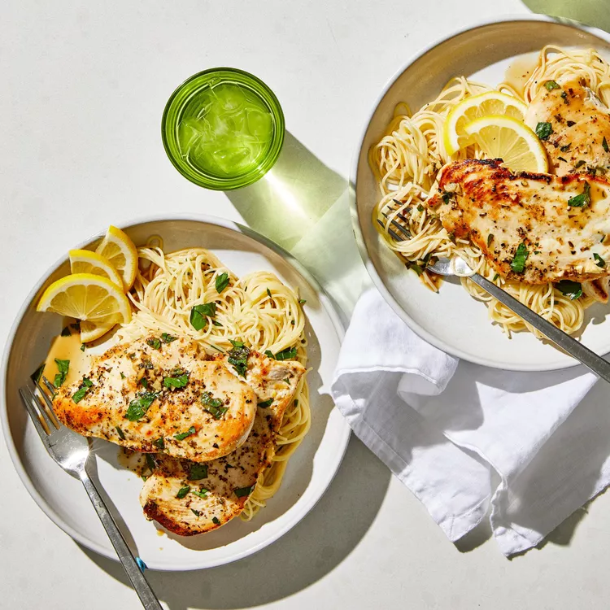

Odin Recipes
Lemon Chicken

Ingredients
- 2 (5 ounce) skinless, boneless chicken breast halves
- Medium lemon, juiced, divided
- Salt and freshly ground black pepper to taste
- Tablespoon olive oil
- 1 pinch dried oregano
- 2 sprigs fresh parsley, chopped, for garnish
Steps
- Place chicken in a bowl; pour 1/2 of the lemon juice over chicken and season with salt.
- Heat olive oil in a medium skillet over medium-low heat.
- Place chicken into hot oil.
- Add remaining lemon juice and oregano; season with black pepper.
- Cook chicken until golden brown and the juices run clear, 5 to 10 minutes per side.